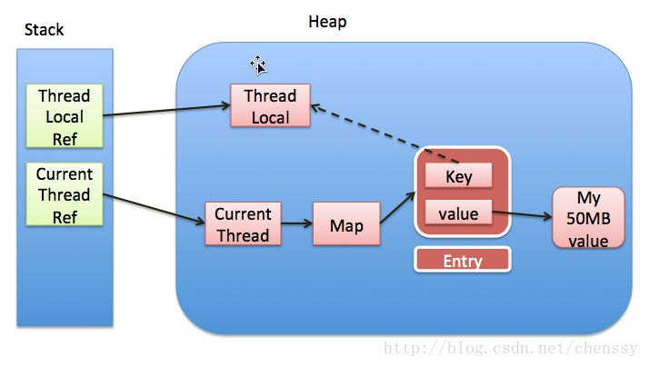
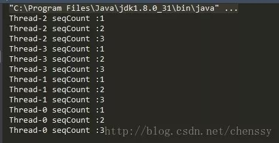
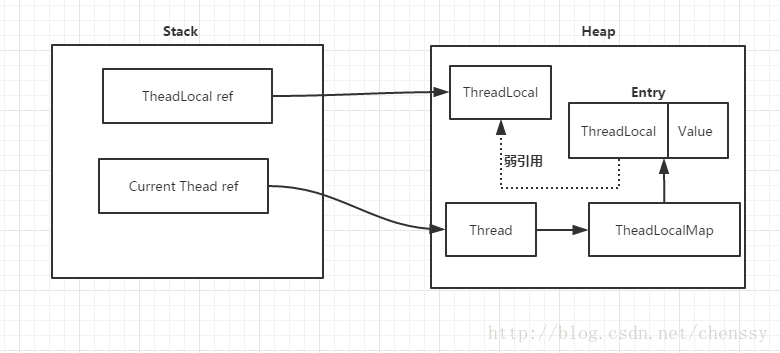

ThreadLoacal是什么？
ThreadLocal是啥？以前面试别人时就喜欢问这个，有些伙伴喜欢把它和线程同步机制混为一谈，事实上ThreadLocal与线程同步无关。ThreadLocal虽然提供了一种解决多线程环境下成员变量的问题，但是它并不是解决多线程共享变量的问题。那么ThreadLocal到底是什么呢？
API是这样介绍它的：
This class provides thread-local variables. These variables differ from their normal counterparts in that each thread that accesses one (via its {@code get} or {@code set} method) has its own, independently initialized copy of the variable. {@code ThreadLocal} instances are typically private static fields in classes that wish to associate state with a thread (e.g.,a user ID or Transaction ID).
该类提供了线程局部 (thread-local) 变量。这些变量不同于它们的普通对应物，因为访问某个变量（通过其
get或set方法）的每个线程都有自己的局部变量，它独立于变量的初始化副本。ThreadLocal实例通常是类中的private static字段，它们希望将状态与某一个线程（例如，用户 ID 或事务 ID）相关联。
所以ThreadLocal与线程同步机制不同，线程同步机制是多个线程共享同一个变量，而ThreadLocal是为每一个线程创建一个单独的变量副本，故而每个线程都可以独立地改变自己所拥有的变量副本，而不会影响其他线程所对应的副本。可以说ThreadLocal为多线程环境下变量问题提供了另外一种解决思路。
ThreadLocal定义了四个方法：
- get()：返回此线程局部变量的当前线程副本中的值。
- initialValue()：返回此线程局部变量的当前线程的“初始值”。
- remove()：移除此线程局部变量当前线程的值。
- set(T value)：将此线程局部变量的当前线程副本中的值设置为指定值。
除了这四个方法，ThreadLocal内部还有一个静态内部类ThreadLocalMap，该内部类才是实现线程隔离机制的关键，get()、set()、remove()都是基于该内部类操作。ThreadLocalMap提供了一种用键值对方式存储每一个线程的变量副本的方法，key为当前ThreadLocal对象，value则是对应线程的变量副本。
对于ThreadLocal需要注意的有两点：
- ThreadLocal实例本身是不存储值，它只是提供了一个在当前线程中找到副本值得key。
- 是ThreadLocal包含在Thread中，而不是Thread包含在ThreadLocal中，有些小伙伴会弄错他们的关系。
下图是Thread、ThreadLocal、ThreadLocalMap的关系（http://blog.xiaohansong.com/2016/08/06/ThreadLocal-memory-leak/）

ThreadLocal使用示例
示例如下：
1 | public class SeqCount { |
运行结果：

从运行结果可以看出，ThreadLocal确实是可以达到线程隔离机制，确保变量的安全性。这里我们想一个问题，在上面的代码中ThreadLocal的initialValue()方法返回的是0，加入该方法返回得是一个对象呢，会产生什么后果呢？例如：
1 | A a = new A(); |
具体过程请参考：对ThreadLocal实现原理的一点思考
ThreadLocal源码解析
ThreadLocal虽然解决了这个多线程变量的复杂问题，但是它的源码实现却是比较简单的。ThreadLocalMap是实现ThreadLocal的关键，我们先从它入手。
ThreadLocalMap
ThreadLocalMap其内部利用Entry来实现key-value的存储，如下：
1 | static class Entry extends WeakReference<ThreadLocal<?>> { |
从上面代码中可以看出Entry的key就是ThreadLocal，而value就是值。同时，Entry也继承WeakReference，所以说Entry所对应key（ThreadLocal实例）的引用为一个弱引用（关于弱引用这里就不多说了，感兴趣的可以关注这篇博客：Java技术之引用类型）
ThreadLocalMap的源码稍微多了点，我们就看两个最核心的方法getEntry()、set(ThreadLocal key, Object value)方法。
set(ThreadLocal key, Object value)
1 | private void set(ThreadLocal<?> key, Object value) { |
这个set()操作和我们在集合了解的put()方式有点儿不一样，虽然他们都是key-value结构，不同在于他们解决散列冲突的方式不同。集合Map的put()采用的是拉链法，而ThreadLocalMap的set()则是采用开放定址法（具体请参考散列冲突处理系列博客）。掌握了开放地址法该方法就一目了然了。
set()操作除了存储元素外，还有一个很重要的作用，就是replaceStaleEntry()和cleanSomeSlots()，这两个方法可以清除掉key == null 的实例，防止内存泄漏。在set()方法中还有一个变量很重要：threadLocalHashCode，定义如下：
1 | private final int threadLocalHashCode = nextHashCode(); |
从名字上面我们可以看出threadLocalHashCode应该是ThreadLocal的散列值，定义为final，表示ThreadLocal一旦创建其散列值就已经确定了，生成过程则是调用nextHashCode()：
1 | private static AtomicInteger nextHashCode = new AtomicInteger(); |
nextHashCode表示分配下一个ThreadLocal实例的threadLocalHashCode的值，HASH_INCREMENT则表示分配两个ThradLocal实例的threadLocalHashCode的增量，从nextHashCode就可以看出他们的定义。
getEntry()
1 | private Entry getEntry(ThreadLocal<?> key) { |
由于采用了开放定址法，所以当前key的散列值和元素在数组的索引并不是完全对应的，首先取一个探测数（key的散列值），如果所对应的key就是我们所要找的元素，则返回，否则调用getEntryAfterMiss()，如下：
1 | private Entry getEntryAfterMiss(ThreadLocal<?> key, int i, Entry e) { |
这里有一个重要的地方，当key == null时，调用了expungeStaleEntry()方法，该方法用于处理key == null，有利于GC回收，能够有效地避免内存泄漏。
get()
返回当前线程所对应的线程变量
1 | public T get() { |
首先通过当前线程获取所对应的成员变量ThreadLocalMap，然后通过ThreadLocalMap获取当前ThreadLocal的Entry，最后通过所获取的Entry获取目标值result。
getMap()方法可以获取当前线程所对应的ThreadLocalMap，如下：
1 | ThreadLocalMap getMap(Thread t) { |
set(T value)
设置当前线程的线程局部变量的值。
1 | public void set(T value) { |
获取当前线程所对应的ThreadLocalMap，如果不为空，则调用ThreadLocalMap的set()方法，key就是当前ThreadLocal，如果不存在，则调用createMap()方法新建一个，如下：
1 | void createMap(Thread t, T firstValue) { |
initialValue()
返回该线程局部变量的初始值。
1 | protected T initialValue() { |
该方法定义为protected级别且返回为null，很明显是要子类实现它的，所以我们在使用ThreadLocal的时候一般都应该覆盖该方法。该方法不能显示调用，只有在第一次调用get()或者set()方法时才会被执行，并且仅执行1次。
remove()
将当前线程局部变量的值删除。
1 | public void remove() { |
该方法的目的是减少内存的占用。当然，我们不需要显示调用该方法，因为一个线程结束后，它所对应的局部变量就会被垃圾回收。
ThreadLocal为什么会内存泄漏
前面提到每个Thread都有一个ThreadLocal.ThreadLocalMap的map，该map的key为ThreadLocal实例，它为一个弱引用，我们知道弱引用有利于GC回收。当ThreadLocal的key == null时，GC就会回收这部分空间，但是value却不一定能够被回收，因为他还与Current Thread存在一个强引用关系，如下（图片来自http://www.jianshu.com/p/ee8c9dccc953）：

由于存在这个强引用关系，会导致value无法回收。如果这个线程对象不会销毁那么这个强引用关系则会一直存在，就会出现内存泄漏情况。所以说只要这个线程对象能够及时被GC回收，就不会出现内存泄漏。如果碰到线程池，那就更坑了。
那么要怎么避免这个问题呢？
在前面提过，在ThreadLocalMap中的setEntry()、getEntry()，如果遇到key == null的情况，会对value设置为null。当然我们也可以显示调用ThreadLocal的remove()方法进行处理。
下面再对ThreadLocal进行简单的总结：
- ThreadLocal 不是用于解决共享变量的问题的，也不是为了协调线程同步而存在，而是为了方便每个线程处理自己的状态而引入的一个机制。这点至关重要。
- 每个Thread内部都有一个ThreadLocal.ThreadLocalMap类型的成员变量，该成员变量用来存储实际的ThreadLocal变量副本。
- ThreadLocal并不是为线程保存对象的副本，它仅仅只起到一个索引的作用。它的主要木得视为每一个线程隔离一个类的实例，这个实例的作用范围仅限于线程内部。